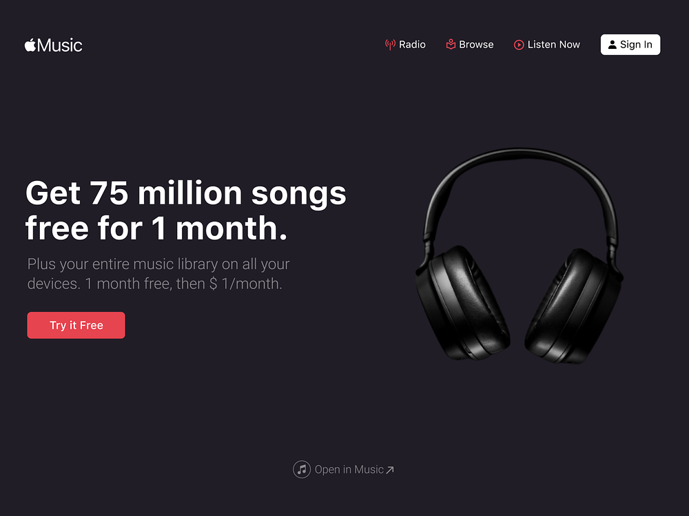

portfolio website
Projects
Project Name
Project Name
About
Rebecca Büscher
Hi there! I’m Rebecca a software engineer and Designer based out of germany. In my projects I try to balance Usability and aesthetics to guarantee the perfect outcome. With this Website I am trying to not only showcase my Work but also offer resources, ideas and guidance to new software engineers or people that are interested in becoming one, so take a look around!
Roadmap
How everything started
As a child I have always been surrounded by computers and technology, this eventually sparked my interest in exploring their capabilities. But it was’nt just using computers, it was creating with them. Music, Art, and eventully programming became my hobbies very soon.